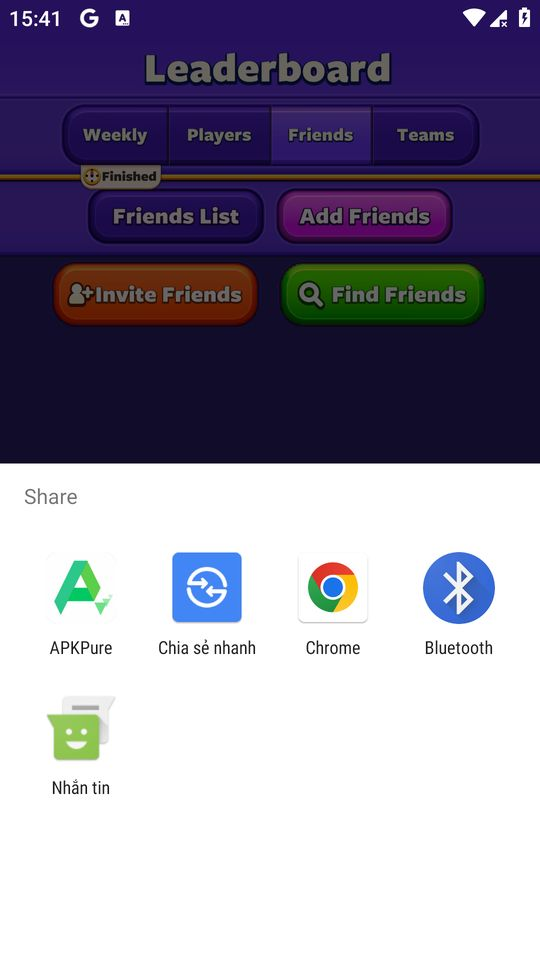

Nguồn mới và việc tiếp theo · Mời bạn (Referral)
Từ Friends mở Invite và info bốn bước, ghi milestone/reward; nếu chooser mở được chỉ Cancel, không chọn gửi.
UC ưu tiên: UC-02 Mở hộp thoại chia sẻ link mời, UC-04 Xem thông tin phần thưởng mời, UC-11 Chia sẻ thất bại hoặc bị huỷ
Gate runtime: gate của snapshot ban đầu trước phục hồi; xem actual và giới hạn round2 phía trên, không suy ra full-feature pass.
Liên kết config: exact_model_source_association
Đủ entry, precondition và 908 UC · GDD hiện tại đầy đủ · Kết luận mã và phần chưa chứng minh
Segment/A/B: default và nhãn variant chỉ là bằng chứng cấu hình; chưa có assignment, phân bổ traffic hoặc uplift mới.
Hồ sơ Referral: 41 config, 5 gap, 1/12 UC có ảnh tham chiếu. Cache và instance ghi ngày tại nguồn; kết quả kiểm chứng mới nằm trong các case dưới đây; không áp dụng cho mọi UC.
Đủ 11 mục đánh giá cho hồ sơ này — data / flow / UC / ảnh / segment / AB / kiến trúc / phần thiếu
Theo dõi toàn bộ 58 danh mục · Full hồ sơ đối soát · Tải GDD JSON đầy đủ · Metadata UI và bảng thưởng đầy đủ
| Mục | Trạng thái theo bằng chứng |
|---|---|
| purpose | documented_static_scope |
| unlock | described_historical_conditions_runtime_boundary_unverified |
| entry_flow | documented_paths_not_all_executed |
| config | source_bound_catalog_present |
| reward | documented_static_rewards_runtime_grant_not_fully_verified |
| use_cases | specified_not_executed_in15nov_ledger |
| screenshots | historical_references_only |
| runtime_actual | not_observed_in15nov_ledger |
| segment_ab | not_identified_in_sources |
| storage_backend_analytics | See full JSON |
| remaining_next_step | See full JSON |
Đã rà hồ sơ không đồng nghĩa mọi nhánh runtime đã pass. Nguồn và bước còn lại nằm trong JSON đầy đủ.
Segment và A/B của feature — 0 dòng có liên hệ nguồn
No matchingrow does not prove no segmentation/AB. Rewardbucketfalsepositives remain explicitly classified.
Consumer, matching basis, selector và giới hạn: full dữ liệu riêng của feature · review chung.
Đối chiếu code / asset · 15/11 — 3 finding
Code/asset 0.0.3063, cache ghi ngày và asset bundle đã đọc từ thiết bị 0.0.3129; mỗi finding giữ đúng nguồn/build, không nâng kiểm tra file thành runtime pass.
MS-FDG-018 — PlayStoreUrl/AppStoreUrl là chuỗi remote config, không nhìn thấy trong client. · resolved_historical_snapshot
Đã trích toàn bộ field/value của ReferralConfigModel từ default0.0.3063 và cache lịch sử hiện có. Nhận định không có giá trị trong client đã được đối chiếu bằng file thật; không xác nhận effective runtime.
Còn lại: Full historical data answered; current effective selection and full runtime remain unverified.
MS-CODE-61 — Referral status1 được xử lý như reward nhận được · partial_static_code
ReferralService asyncresponse duyệt ReferralRewardItem và chỉ nhánhStatus==1 thêm reward vào model; GetEarnedRewards xây list reward cho claim. Body đã cho semantics hẹp của1, nhưng chưa có đủ enum/transition cho0/2 hoặc mọi status và earned_at/claimed_at.
Còn lại: Cần schema/backend response từngstate và RewardsClaimed ack; không gọi unknownstatus đãclaimed chỉ từtimestamp hoặc int.
MS-Referral-G002 — · resolved_static_snapshot
Đã trích toàn bộ field/value của ReferralConfigModel từ default0.0.3063 và cache lịch sử hiện có. Nhận định không có giá trị trong client đã được đối chiếu bằng file thật; không xác nhận effective runtime.
Còn lại: Kiểm chứng effective config/asset và nhánh runtime trên đúng build nếu cần.
Finding phía trên đã được bổ sung/thu hẹp bởi MS-FDG-018 ở đầu phần này.
Mời bạn (Referral)
Chia sẻ link mời riêng; khi người mới đạt mốc level, người mời nhận thưởng, tối đa 3 lượt.
Mô tả
- Referral là vòng lặp mời người chơi mới: người chơi chia sẻ link mời riêng qua hộp thoại chia sẻ hệ điều hành.
- Link có thể là invite_link cá nhân do backend cấp (UseBackendUrl = true) hoặc link store theo nền tảng.
- Người được mời cài game, hệ thống attribution (Adjust) trả về referrer_public_id, client đăng ký quan hệ giới thiệu.
- Khi người mới đạt mốc level Milestone (mặc định level 5), người mời nhận thưởng theo danh sách ReferralRewards.
- Số lượt thưởng bị giới hạn bởi MaxRewardLimit (mặc định 3 lượt).
- Mỗi lượt gắn với một ReferralRewardItem chứa hồ sơ người được mời (tên, avatar, tiến độ) nên popup hiển thị cụ thể ai đã giúp bạn.
- Đây là kênh UA tự nhiên, gắn chặt với Friends (link mời cũng tự kết bạn) và Profile (public id).
- Câu mời mặc định lấy từ khoá localize 'ShareMessageTemplate' — bản EN là "Lets play Magic Sort together!".
- Popup mời chỉ hiện một lần mỗi phiên để tránh làm phiền người chơi.
Còn thiếu / chưa xác minh
Mở khóa & điểm vào
Bật/tắt bằng Firebase Remote Config key 'ReferralConfigModel': ReferralConfigModel.IsEnabled. ReferralService.CanShowInvite() còn kiểm tra cờ phiên _showedInviteInSession để không hiện popup mời nhiều lần trong một phiên.
Điểm vào:
- Popup mời bạn FriendsInvitePopup (nút Invite trong tab Friends)
- Nút Invite trong FindFriendPopup (FindFriendPopup.OnInviteButtonSelected)
- Popup thông tin phần thưởng FriendsInviteInfoPopup
- Deeplink/attribution khi người mới cài game (ReferralService.CacheReferrerIdFromAttribution)
- Popup nhận thưởng khi có ReferralRewardItem đủ điều kiện (localize 'ReferralRewards')
Cách hoạt động
- Khi khởi tạo dữ liệu, ReferralService.InitializeData() gọi InitializeInviteData() → ReferralRemoteService.GetMyInviteData() (/v1/get-my-invite-data).
- Server trả InviteDataResponse{invite_link, rewards}; _url = invite_link nếu ReferralConfigModel.UseBackendUrl = true.
- Nếu không, GetStoreUrl(config) chọn PlayStoreUrl (https://play.google.com/store/apps/details?id=com.grandgames.magicsort) hoặc AppStoreUrl (https://apps.apple.com/us/app/magic-sort/id6499209744) theo nền tảng.
- Danh sách _referralRewards gồm các ReferralRewardItem với status/created_at/earned_at/claimed_at cho biết từng người được mời đang ở giai đoạn nào.
- Người chơi mở FriendsInvitePopup (hoặc nút Invite trong FindFriendPopup) và bấm mời; CanShowInvite() kiểm tra cờ _showedInviteInSession.
- OpenShareDialogue(source) dựng payload bằng BuildPayload() = câu localize 'ShareMessageTemplate' + xuống dòng + _url.
- AndroidShare(payload) mở Intent ACTION_SEND kiểu text/plain qua createChooser; kết quả về HandleShareCompleted(success), analytics bắn 'invite_send' kèm source.
- Phía người được mời: CacheReferrerIdFromAttribution() đọc referrer id từ dữ liệu attribution sau khi cài game.
- ReferralDataService.ReferralRegistered(referrerId) lưu ReferralDataModel.ReferrerId và client gửi RegisterReferralRequestModel{referrer_public_id}; analytics 'referral_registered' kèm referrer_id.
- Song song, AutoAddFriend(AutoAddFriendRequestModel{target_user_public_id}) tự kết bạn với người mời.
- Mỗi lần thắng level, LevelWin() → CheckMilestoneStatus() so tiến độ với GetMilestone() (= ReferralConfigModel.Milestone, mặc định 5).
- Khi đạt mốc, ConfirmReferralMilestone(referrerPublicId) báo server (/v1/confirm-referral-milestone), ReachedMilestone() đánh dấu DidReachMilestone() = true, analytics 'referral_milestone_reached' kèm progress.
- Người mời thấy HasReferralRewards = true; GetEarnedRewards() trả các RewardModel đã đủ điều kiện.
- Nhận thưởng bằng ClaimInviteRewards() (/v1/claim-invite-rewards) trả ClaimInviteRewardsResponse{claimed_count}.
- RewardsClaimed() và AddToClaimedRewards(rewards) ghi lại để không nhận trùng; khi GetClaimedRewardsCount() chạm MaxRewardLimit (mặc định 3) thì hết lượt.
- Toàn bộ ReferralDataModel (ReferrerId, ReachedMilestone, ClaimedRefRewards) được lưu và đồng bộ qua SyncService.
Luồng chi tiết theo code
Khi khởi tạo dữ liệu, ReferralService.InitializeData() gọi InitializeInviteData() → ReferralRemoteService.GetMyInviteData() lấy InviteDataResponse{invite_link, rewards}. _url được đặt bằng invite_link nếu ReferralConfigModel.UseBackendUrl = true, ngược lại dùng GetStoreUrl(config) chọn PlayStoreUrl hoặc AppStoreUrl theo nền tảng. Danh sách _referralRewards là các ReferralRewardItem với trường status/created_at/earned_at/claimed_at cho biết từng người được mời đang ở giai đoạn nào. Khi người chơi bấm mời, OpenShareDialogue(source) dựng payload bằng BuildPayload() = text mẫu localize 'ShareMessageTemplate' ("Lets play Magic Sort together!") + xuống dòng + _url, rồi AndroidShare(payload) mở Intent ACTION_SEND kiểu text/plain qua createChooser; kết quả về HandleShareCompleted(success) và SendShareOpenedEvent(source) gửi analytics 'invite_send'. Ở phía người được mời: CacheReferrerIdFromAttribution() đọc referrer id từ dữ liệu attribution, ReferralDataService.ReferralRegistered(referrerId) lưu vào ReferralDataModel.ReferrerId và client gửi RegisterReferralRequestModel{referrer_public_id}; analytics 'referral_registered' kèm 'referrer_id'. Mỗi lần thắng level, LevelWin() → CheckMilestoneStatus() so tiến độ với GetMilestone() (= ReferralConfigModel.Milestone); khi đạt, ReferralRemoteService.ConfirmReferralMilestone(referrerPublicId) báo server, ReferralDataService.ReachedMilestone() đánh dấu DidReachMilestone() = true và bắn analytics 'referral_milestone_reached'. Người mời thấy HasReferralRewards = true, GetEarnedRewards() trả các RewardModel đã đủ điều kiện; nhận bằng ClaimInviteRewards() → ClaimInviteRewardsResponse{claimed_count}, sau đó RewardsClaimed() và ReferralDataService.AddToClaimedRewards(rewards) để không nhận trùng (RewardClaimed(reward), GetClaimedRewardsCount() so với MaxRewardLimit).
Ảnh chụp màn hình (1)
1 ảnh chụp trong game (LDPlayer, bản 0.0.3129, tài khoản thử level 321 → 351 (07/10/2026)). Bấm ảnh để phóng to; ảnh chụp lịch sử mở PNG gốc. Nhãn UC dẫn tới use case tương ứng.


Phần thưởng
PHẦN THƯỞNG MỖI LƯỢT GIỚI THIỆU (ReferralConfigModel.json, client default)
| Mốc | Điều kiện | Phần thưởng |
|---|---|---|
| Lượt 1 | Người được mời đạt level 5 |  100 coin 100 coin  1 Extra Bottle 1 Extra Bottle  30 phút Unlimited Lives 30 phút Unlimited Lives |
| Lượt 2 | Người được mời thứ hai đạt level 5 | 100 coin 1 Extra Bottle 30 phút Unlimited Lives |
| Lượt 3 | Người được mời thứ ba đạt level 5 | 100 coin 1 Extra Bottle 30 phút Unlimited Lives |
| Sau lượt 3 | Đã đạt MaxRewardLimit = 3 | Không còn thưởng |
CHI TIẾT GÓI THƯỞNG (ReferralRewards)
| Mục | CurrencyType | Giá trị |
|---|---|---|
| ReferralRewards[0] | 1 (Coin) | Amount = 100 → 100 coin |
| ReferralRewards[1] | 6 (ExtraBottle) | Amount = 1 → 1 Extra Bottle |
| ReferralRewards[2] | 2 (Life) | TimeSpan = 00:30:00 → 30 phút Unlimited Lives |
LINK MỜI THEO NỀN TẢNG (ReferralConfigModel.json, client default)
| Nền tảng | Khoá | Giá trị |
|---|---|---|
| Android | PlayStoreUrl | https://play.google.com/store/apps/details?id=com.grandgames.magicsort |
| iOS | AppStoreUrl | https://apps.apple.com/us/app/magic-sort/id6499209744 |
| Link cá nhân | invite_link (UseBackendUrl = true) | (server) do backend cấp riêng cho từng người chơi |
Phần thưởng theo code
| Ngữ cảnh | Phần thưởng | Evidence |
|---|---|---|
| Người được mời đạt level Milestone | ReferralConfigModel.ReferralRewards (List<RewardModel> do server cấu hình) | ReferralService.GetEarnedRewards; ReferralRemoteService.ClaimInviteRewards |
| Trần thưởng | Tối đa MaxRewardLimit lượt | ReferralDataService.GetClaimedRewardsCount |
Số liệu chính
| Chỉ số | Giá trị | Nguồn |
|---|---|---|
| Bật mặc định (client) | false | ReferralConfigModel.json: IsEnabled |
| Dùng link backend mặc định | false | ReferralConfigModel.json: UseBackendUrl |
| Mốc level của người được mời | 5 | ReferralConfigModel.json: Milestone |
| Số lượt thưởng tối đa | 3 | ReferralConfigModel.json: MaxRewardLimit |
| Thưởng — coin | 100 (CurrencyType 1) | ReferralRewards[0].Amount |
| Thưởng — Extra Bottle | 1 (CurrencyType 6) | ReferralRewards[1].Amount |
| Thưởng — Unlimited Lives | TimeSpan 00:30:00 (CurrencyType 2) | ReferralRewards[2].TimeSpan |
| Link Play Store | https://play.google.com/store/apps/details?id=com.grandgames.magicsort | ReferralConfigModel.json: PlayStoreUrl |
| Link App Store | https://apps.apple.com/us/app/magic-sort/id6499209744 | ReferralConfigModel.json: AppStoreUrl |
| Số lần hiện popup mời trong một phiên | 1 | ReferralService._showedInviteInSession |
| Câu mời mặc định | "Lets play Magic Sort together!" | ReferralService.DefaultShareText = "ShareMessageTemplate" |
| Số endpoint của Referral | 4 | BackendEnvironmentConfig.asset |
| Endpoint lấy link mời | /v1/get-invite-link | BackendEnvironmentConfig.asset |
| Endpoint lấy dữ liệu mời | /v1/get-my-invite-data | BackendEnvironmentConfig.asset |
| Endpoint xác nhận mốc | /v1/confirm-referral-milestone | BackendEnvironmentConfig.asset |
| Endpoint nhận thưởng | /v1/claim-invite-rewards | BackendEnvironmentConfig.asset |
| Số trường của ReferralRewardItem | 11 trường (referred_user_public_id … claimed_at) | ReferralRewardItem |
| Tên khối đồng bộ | "ReferralDataModel" | ReferralDataService.GetSyncName |
| Số sự kiện analytics | 6 (invite_send, invite_popup_impression, referral_popup_invite_impression, referral_registered, referral_milestone_reached, friends_count) | Referral.analytics |
| Kiểu chia sẻ Android | ACTION_SEND, text/plain, createChooser | ReferralService.AndroidShare |
Ghi chú thiết kế
- Mốc level 5 đủ thấp để người được mời dễ đạt, giữ vòng lặp mời có tỉ lệ hoàn thành cao.
- Trần 3 lượt giới hạn chi phí kinh tế mà vẫn khuyến khích mời nhóm bạn thân.
- Gói thưởng trộn tiền, booster và Unlimited Lives để hữu ích với mọi kiểu người chơi.
- Tự kết bạn khi cài qua link mời làm vòng lặp xã hội khép kín ngay lần mở game đầu tiên.
Use case (12)
Bấm vào từng use case để mở. Mở/đóng tất cả
UC-01 Nạp dữ liệu mời và link riêng
Các bước- ReferralService.InitializeData() → InitializeInviteData()
- ReferralRemoteService.GetMyInviteData() → InviteDataResponse{invite_link, rewards}
- Đặt _url = invite_link nếu UseBackendUrl, ngược lại GetStoreUrl(config)
- _referralRewards = danh sách ReferralRewardItem
| Actor | System |
|---|---|
| Trigger | Khởi tạo dữ liệu người chơi |
| Điều kiện | ReferralConfigModel.IsEnabled = true |
| Kết quả | Sẵn sàng chia sẻ link và biết đang có bao nhiêu người được mời |
| Quy tắc / số liệu | GetStoreUrl chọn PlayStoreUrl (Android) hoặc AppStoreUrl (iOS) |
| Evidence | ReferralService.InitializeData; ReferralService.InitializeInviteData; ReferralRemoteService.GetMyInviteData; ReferralService.GetStoreUrl |
UC-02 Mở hộp thoại chia sẻ link mời
Các bước- ReferralService.OpenShareDialogue(source)
- BuildPayload(): localize 'ShareMessageTemplate' ("Lets play Magic Sort together!") + "\n" + _url
- AndroidShare(payload): Intent android.content.Intent, setAction ACTION_SEND, putExtra EXTRA_TEXT, setType text/plain, createChooser("Share"), startActivity qua com.unity3d.player.UnityPlayer.currentActivity
- HandleShareCompleted(success) xử lý kết quả
- SendShareOpenedEvent(source) gửi analytics 'invite_send' kèm 'source'
| Actor | Player |
|---|---|
| Trigger | Bấm Invite trong FriendsInvitePopup hoặc FindFriendPopup |
| Điều kiện | Đã có _url |
| Kết quả | Người chơi chọn ứng dụng để gửi link mời |
| Quy tắc / số liệu | DefaultShareText = "ShareMessageTemplate" (khoá localize, const trong ReferralService) |
| Evidence | ReferralService.OpenShareDialogue; ReferralService.BuildPayload; ReferralService.AndroidShare; ReferralService.HandleShareCompleted; ReferralService.SendShareOpenedEvent |
UC-03 Hiển thị popup mời một lần mỗi phiên
Các bước- ReferralService.CanShowInvite() kiểm tra cấu hình và _showedInviteInSession
- Hiện FriendsInvitePopup (localize 'FriendsInviteFriend')
- ReferralService.MarkInviteShowed() đặt _showedInviteInSession = true
| Actor | System |
|---|---|
| Trigger | Điều kiện hiển thị popup mời |
| Điều kiện | CanShowInvite() = true |
| Kết quả | Không spam popup mời trong cùng một phiên chơi |
| Quy tắc / số liệu | Cờ chỉ tồn tại trong phiên (không lưu). Analytics 'invite_popup_impression', 'referral_popup_invite_impression'; chuỗi 'force_invite_popup' trong FriendsInvitePopup cho luồng ép hiện |
| Evidence | ReferralService.CanShowInvite; ReferralService.MarkInviteShowed; FriendsInvitePopup.Show |
UC-04 Xem thông tin phần thưởng mời
Các bước- FriendsInvitePopup.OnInfoButtonSelected() mở FriendsInviteInfoPopup
- Hiển thị 4 bước: 'FriendsInviteInfo1' (Send an invite!), 'FriendsInviteInfo2' (Friend reaches level {0}), 'FriendsInviteInfo3' (Earn amazing rewards!), 'FriendsInviteInfo4' (bạn phải là người chơi MỚI)
- FriendsInvitePopup.UpdateView() dựng danh sách phần thưởng bằng CurrencyViewFactory và InitializePlusSigns()
| Actor | Player |
|---|---|
| Trigger | Bấm nút info trong FriendsInvitePopup |
| Điều kiện | - |
| Kết quả | Người chơi hiểu điều kiện: người được mời phải mới và phải đạt level mốc |
| Quy tắc / số liệu | Level trong text lấy từ ReferralConfigModel.Milestone (localize 'FriendsInviteRewardDescription') |
| Evidence | FriendsInvitePopup.OnInfoButtonSelected; FriendsInvitePopup.UpdateView; FriendsInviteInfoPopup; ReferralService.GetMilestone |
UC-05 Đăng ký quan hệ giới thiệu khi cài game qua link
Các bước- ReferralService.CacheReferrerIdFromAttribution() đọc referrer id
- GetReferrerPublicId() trả id
- ReferralDataService.ReferralRegistered(referrerId) lưu ReferralDataModel.ReferrerId
- Gửi RegisterReferralRequestModel{referrer_public_id} lên backend
- Analytics 'referral_registered' kèm tham số 'referrer_id'
| Actor | System |
|---|---|
| Trigger | Người mới mở game lần đầu sau khi cài từ link mời |
| Điều kiện | Dữ liệu attribution có referrer id; chưa đăng ký (IsReferralRegistered() = false) |
| Kết quả | Backend ghi nhận ai là người giới thiệu, mở đường cho thưởng mốc |
| Quy tắc / số liệu | Chỉ đăng ký được một lần (IsReferralRegistered chặn ghi đè) |
| Evidence | ReferralService.CacheReferrerIdFromAttribution; ReferralService.GetReferrerPublicId; ReferralDataService.ReferralRegistered; ReferralDataService.IsReferralRegistered; RegisterReferralRequestModel |
UC-06 Người được mời đạt mốc level
Các bước- ReferralService.LevelWin() → CheckMilestoneStatus()
- So sánh tiến độ người chơi với GetMilestone() = ReferralConfigModel.Milestone
- Đủ điều kiện → ReferralRemoteService.ConfirmReferralMilestone(referrerPublicId) → ReferralWebResponse
- ReferralDataService.ReachedMilestone() đặt cờ ReachedMilestone = true
- Analytics 'referral_milestone_reached'
| Actor | System |
|---|---|
| Trigger | Thắng level |
| Điều kiện | Có ReferrerId và DidReachMilestone() = false |
| Kết quả | Người mời đủ điều kiện nhận thưởng cho lượt giới thiệu này |
| Quy tắc / số liệu | Chỉ báo một lần cho mỗi tài khoản được mời |
| Evidence | ReferralService.LevelWin; ReferralService.CheckMilestoneStatus; ReferralRemoteService.ConfirmReferralMilestone; ReferralDataService.ReachedMilestone; ReferralDataService.DidReachMilestone |
UC-07 Người mời nhận thưởng giới thiệu
Các bước- ReferralService.GetEarnedRewards() lọc ReferralRewardItem có earned_at nhưng chưa claimed_at
- Bấm nhận → ReferralRemoteService.ClaimInviteRewards() → ClaimInviteRewardsResponse{claimed_count}
- ReferralService.RewardsClaimed() cập nhật trạng thái
- ReferralDataService.AddToClaimedRewards(rewards) ghi vào ClaimedRefRewards
- RewardService trao RewardModel từ ReferralConfigModel.ReferralRewards
| Actor | Player |
|---|---|
| Trigger | Mở popup thưởng ('ReferralRewards' = Friend Referral Rewards) |
| Điều kiện | HasReferralRewards = true |
| Kết quả | Coin/booster được cộng, danh sách thưởng chờ rỗng dần |
| Quy tắc / số liệu | RewardClaimed(reward) chặn nhận trùng; GetClaimedRewardsCount() so với MaxRewardLimit để dừng khi đạt trần |
| Evidence | ReferralService.GetEarnedRewards; ReferralService.RewardsClaimed; ReferralRemoteService.ClaimInviteRewards; ReferralDataService.AddToClaimedRewards; ReferralDataService.RewardClaimed; ReferralDataService.GetClaimedRewardsCount |
UC-08 Hiển thị danh sách người đã mời
Các bước- Mỗi item mang referred_user_public_id, referred_nick_name, referred_image_url/id, referred_progress, referred_frame_id, referred_name_style
- status cho biết giai đoạn (đã cài / đã đạt mốc / đã nhận thưởng)
- created_at / earned_at / claimed_at làm mốc thời gian
| Actor | Player |
|---|---|
| Trigger | Mở popup thưởng mời |
| Điều kiện | Có ReferralRewardItem |
| Kết quả | Người chơi thấy rõ ai đã cài game và ai còn đang tiến tới mốc |
| Quy tắc / số liệu | Avatar dùng chung ProfileSpriteCacheService như Friends |
| Evidence | ReferralRewardItem; ReferralService.GetReferralRewards; InviteDataResponse |
UC-09 Đạt trần số phần thưởng giới thiệu
Các bước- ReferralService.GetEarnedRewards() không trả thêm phần thưởng
- HasReferralRewards = false
| Actor | System |
|---|---|
| Trigger | Số lượt đã nhận bằng MaxRewardLimit |
| Điều kiện | GetClaimedRewardsCount() >= ReferralConfigModel.MaxRewardLimit |
| Kết quả | Không thể nhận thêm dù tiếp tục mời (chống lạm dụng) |
| Quy tắc / số liệu | MaxRewardLimit do remote config |
| Evidence | ReferralDataService.GetClaimedRewardsCount; ReferralService.get_HasReferralRewards; ReferralConfigModel.MaxRewardLimit |
UC-10 Đồng bộ và xoá dữ liệu Referral
Các bước- ReferralDataService.MarkDataForLateUpdate() khi có thay đổi, LateUpdate() lưu qua ISaveLoad<ReferralDataModel>
- SerializeModelForSync() / GetSyncName() = "ReferralDataModel"
- OverwriteModelFromSync(data) khi đăng nhập máy khác
- DeleteData() (IDeletable) xoá ReferrerId, ReachedMilestone, ClaimedRefRewards khi xoá tài khoản
| Actor | System |
|---|---|
| Trigger | SyncService hoặc xoá tài khoản |
| Điều kiện | - |
| Kết quả | Quan hệ giới thiệu và thưởng đã nhận theo tài khoản, không theo thiết bị |
| Quy tắc / số liệu | IsDataChangedSinceLastSave/DataSynced quản lý cờ bẩn |
| Evidence | ReferralDataService.SerializeModelForSync; ReferralDataService.GetSyncName; ReferralDataService.OverwriteModelFromSync; ReferralDataService.DeleteData |
UC-11 Chia sẻ thất bại hoặc bị huỷ
Các bước- ReferralService.HandleShareCompleted(false)
- Không gửi sự kiện thành công, không thay đổi dữ liệu
| Actor | System |
|---|---|
| Trigger | Người chơi thoát hộp thoại chia sẻ |
| Điều kiện | Đã mở Intent chia sẻ |
| Kết quả | Người chơi có thể mời lại bất kỳ lúc nào |
| Quy tắc / số liệu | Không có cooldown mời trong client |
| Evidence | ReferralService.HandleShareCompleted |
UC-12 Lỗi mạng khi lấy dữ liệu mời
Các bước- ApiResponse<InviteDataResponse> không hợp lệ → _url giữ giá trị store url dự phòng
- ReferralRemoteService.CancelRequests() huỷ request treo khi Dispose
| Actor | System |
|---|---|
| Trigger | GetMyInviteData thất bại |
| Điều kiện | - |
| Kết quả | Vẫn mời được bằng link store, chỉ mất phần theo dõi cá nhân hoá |
| Quy tắc / số liệu | UseBackendUrl = false là chế độ dự phòng thuần store url |
| Evidence | ReferralRemoteService.GetMyInviteData; ReferralRemoteService.CancelRequests; ReferralService.GetStoreUrl |
Cấu hình (41)
Gộp mọi nguồn: const trong code, JSON mặc định trong Resources, bảng static, storage key, AB test, cờ server.
| Nguồn | Key | Kiểu | Giá trị | Ý nghĩa | Nơi định nghĩa |
|---|---|---|---|---|---|
| Default/code0.0.3063 and historical caches20260910/20261010; per-snapshot source/hash in snapshot_values; not effective-runtime proof | ReferralConfigModel.IsEnabled | bool | default_0.0.3063: false; cache_20260910: false; cache_20261010: false; firebase_20260910: false | Bật/tắt tính năng mời bạn [15/11: giá trị theo snapshot cụ thể; thiếu field khác với false/0. Không xác nhận assignment hoặc effective runtime.] | Firebase Remote Config key 'ReferralConfigModel' |
| Default/code0.0.3063 and historical caches20260910/20261010; per-snapshot source/hash in snapshot_values; not effective-runtime proof | ReferralConfigModel.UseBackendUrl | bool | default_0.0.3063: false; cache_20260910: true; cache_20261010: true; firebase_20260910: true | Dùng invite_link cá nhân từ backend hay chỉ link store [15/11: giá trị theo snapshot cụ thể; thiếu field khác với false/0. Không xác nhận assignment hoặc effective runtime.] | ReferralService.InitializeInviteData |
| remote config | ReferralConfigModel.PlayStoreUrl | string | server (link store Android) | Link dự phòng cho Android | ReferralService.GetStoreUrl |
| remote config | ReferralConfigModel.AppStoreUrl | string | server (link store iOS) | Link dự phòng cho iOS | ReferralService.GetStoreUrl |
| Default/code0.0.3063 and historical caches20260910/20261010; per-snapshot source/hash in snapshot_values; not effective-runtime proof | ReferralConfigModel.Milestone | int (level) | default_0.0.3063: 5; cache_20260910: 5; cache_20261010: 5; firebase_20260910: 5 | Mốc level người được mời phải đạt để người mời có thưởng [15/11: giá trị theo snapshot cụ thể; thiếu field khác với false/0. Không xác nhận assignment hoặc effective runtime.] | ReferralService.GetMilestone; localize 'FriendsInviteInfo2' |
| remote config | ReferralConfigModel.ReferralRewards | List<RewardModel> | server | Danh sách phần thưởng cho mỗi lượt giới thiệu thành công | ReferralService.GetReferralRewards |
| Default/code0.0.3063 and historical caches20260910/20261010; per-snapshot source/hash in snapshot_values; not effective-runtime proof | ReferralConfigModel.MaxRewardLimit | int | default_0.0.3063: 3; cache_20260910: 3; cache_20261010: 3; firebase_20260910: 3 | Số lượt thưởng tối đa nhận được [15/11: giá trị theo snapshot cụ thể; thiếu field khác với false/0. Không xác nhận assignment hoặc effective runtime.] | ReferralDataService.GetClaimedRewardsCount |
| code const | ReferralService.DefaultShareText | string const | "ShareMessageTemplate" | Khoá localize của câu mời; bản EN = "Lets play Magic Sort together!" | ReferralService (const) + localization.tsv |
| code const | Android share intent | string | "android.content.Intent", "ACTION_SEND", "EXTRA_TEXT", "text/plain", "createChooser", "Share", "com.unity3d.player.UnityPlayer", "currentActivity", "startActivity" | Chuỗi JNI dựng hộp thoại chia sẻ hệ thống | ReferralService.AndroidShare (strings-by-type.tsv) |
| code field | ReferralDataModel | class | ReferrerId, ReachedMilestone, ClaimedRefRewards | Dữ liệu Referral lưu cục bộ/đồng bộ | ReferralDataModel |
| code field | ReferralRewardItem | class (JSON) | referred_user_public_id, referred_nick_name, referred_image_url, referred_image_id, referred_progress, referred_frame_id, referred_name_style, status, created_at, earned_at, claimed_at | Một lượt giới thiệu và trạng thái của nó | ReferralRewardItem |
| storage key | ReferralDataModel | sync name | "ReferralDataModel" | Tên khối dữ liệu Referral trong SyncService | ReferralDataService.GetSyncName |
| code field | _showedInviteInSession | bool | false mỗi phiên | Chỉ hiện popup mời một lần mỗi phiên | ReferralService |
| asset | BackendEnvironmentConfig – endpoint Referral (chỉ path) | string | /v1/get-invite-link, /v1/get-my-invite-data, /v1/confirm-referral-milestone, /v1/claim-invite-rewards | Đường dẫn API của Referral | Assets/MonoBehaviour/BackendEnvironmentConfig.asset |
| json default | ReferralConfigModel.json: IsEnabled | false | Resources/defaultconfigs/ReferralConfigModel.json (client default, remote config ghi đè) | ||
| json default | ReferralConfigModel.json: UseBackendUrl | false | Resources/defaultconfigs/ReferralConfigModel.json (client default, remote config ghi đè) | ||
| json default | ReferralConfigModel.json: PlayStoreUrl | https://play.google.com/store/apps/details?id=com.grandgames.magicsort | Resources/defaultconfigs/ReferralConfigModel.json (client default, remote config ghi đè) | ||
| json default | ReferralConfigModel.json: AppStoreUrl | https://apps.apple.com/us/app/magic-sort/id6499209744 | Resources/defaultconfigs/ReferralConfigModel.json (client default, remote config ghi đè) | ||
| json default | ReferralConfigModel.json: Milestone | 5 | Resources/defaultconfigs/ReferralConfigModel.json (client default, remote config ghi đè) | ||
| json default | ReferralConfigModel.json: ReferralRewards[0].CurrencyType | 1 | Resources/defaultconfigs/ReferralConfigModel.json (client default, remote config ghi đè) | ||
| json default | ReferralConfigModel.json: ReferralRewards[0].Amount | 100 | Resources/defaultconfigs/ReferralConfigModel.json (client default, remote config ghi đè) | ||
| json default | ReferralConfigModel.json: ReferralRewards[1].CurrencyType | 6 | Resources/defaultconfigs/ReferralConfigModel.json (client default, remote config ghi đè) | ||
| json default | ReferralConfigModel.json: ReferralRewards[1].Amount | 1 | Resources/defaultconfigs/ReferralConfigModel.json (client default, remote config ghi đè) | ||
| json default | ReferralConfigModel.json: ReferralRewards[2].CurrencyType | 2 | Resources/defaultconfigs/ReferralConfigModel.json (client default, remote config ghi đè) | ||
| json default | ReferralConfigModel.json: ReferralRewards[2].Amount | 1 | Resources/defaultconfigs/ReferralConfigModel.json (client default, remote config ghi đè) | ||
| json default | ReferralConfigModel.json: ReferralRewards[2].TimeSpan | 00:30:00 | Resources/defaultconfigs/ReferralConfigModel.json (client default, remote config ghi đè) | ||
| json default | ReferralConfigModel.json: MaxRewardLimit | 3 | Resources/defaultconfigs/ReferralConfigModel.json (client default, remote config ghi đè) | ||
| server cache (historical) | ReferralConfigModel (live) = default? | 12/21 key trùng default, 9 key khác/thêm | Đối chiếu config server thật (CachedRemoteConfigs) với ReferralConfigModel.json | Configs/CachedRemoteConfigs + Firebase RC template 3197 — đọc từ LDPlayer 2026-09-10, segment non-purchaser, level 320 (spoof) | |
| server cache (historical) | ReferralConfigModel: useBackendUrl | true | server ghi đè (default = false) | Configs/CachedRemoteConfigs + Firebase RC template 3197 — đọc từ LDPlayer 2026-09-10, segment non-purchaser, level 320 (spoof) | |
| server cache (historical) | ReferralConfigModel: referralRewards[0].timeSpan | 00:00:00 | server-only (không có trong default) | Configs/CachedRemoteConfigs + Firebase RC template 3197 — đọc từ LDPlayer 2026-09-10, segment non-purchaser, level 320 (spoof) | |
| server cache (historical) | ReferralConfigModel: referralRewards[0].chestType | 0 | server-only (không có trong default) | Configs/CachedRemoteConfigs + Firebase RC template 3197 — đọc từ LDPlayer 2026-09-10, segment non-purchaser, level 320 (spoof) | |
| server cache (historical) | ReferralConfigModel: referralRewards[0].collectionPackType | 0 | server-only (không có trong default) | Configs/CachedRemoteConfigs + Firebase RC template 3197 — đọc từ LDPlayer 2026-09-10, segment non-purchaser, level 320 (spoof) | |
| server cache (historical) | ReferralConfigModel: referralRewards[1].timeSpan | 00:00:00 | server-only (không có trong default) | Configs/CachedRemoteConfigs + Firebase RC template 3197 — đọc từ LDPlayer 2026-09-10, segment non-purchaser, level 320 (spoof) | |
| server cache (historical) | ReferralConfigModel: referralRewards[1].chestType | 0 | server-only (không có trong default) | Configs/CachedRemoteConfigs + Firebase RC template 3197 — đọc từ LDPlayer 2026-09-10, segment non-purchaser, level 320 (spoof) | |
| server cache (historical) | ReferralConfigModel: referralRewards[1].collectionPackType | 0 | server-only (không có trong default) | Configs/CachedRemoteConfigs + Firebase RC template 3197 — đọc từ LDPlayer 2026-09-10, segment non-purchaser, level 320 (spoof) | |
| server cache (historical) | ReferralConfigModel: referralRewards[2].chestType | 0 | server-only (không có trong default) | Configs/CachedRemoteConfigs + Firebase RC template 3197 — đọc từ LDPlayer 2026-09-10, segment non-purchaser, level 320 (spoof) | |
| server cache (historical) | ReferralConfigModel: referralRewards[2].collectionPackType | 0 | server-only (không có trong default) | Configs/CachedRemoteConfigs + Firebase RC template 3197 — đọc từ LDPlayer 2026-09-10, segment non-purchaser, level 320 (spoof) | |
| server instance (historical) | ReferralDataModel (instance) | 3 key, xem facts/runtime/event_instances/ReferralDataModel.json | Dữ liệu phiên event đang chạy (ngày, mốc, thưởng, đối thủ) | PlayerPrefs ReferralDataModel (instance event đang chạy) — đọc từ LDPlayer 2026-09-10, segment non-purchaser, level 320 (spoof) | |
| server instance (historical) | ReferralDataModel: referrerId | PlayerPrefs ReferralDataModel (instance event đang chạy) — đọc từ LDPlayer 2026-09-10, segment non-purchaser, level 320 (spoof) | |||
| server instance (historical) | ReferralDataModel: reachedMilestone | true | PlayerPrefs ReferralDataModel (instance event đang chạy) — đọc từ LDPlayer 2026-09-10, segment non-purchaser, level 320 (spoof) | ||
| server instance (historical) | ReferralDataModel: claimedRefRewards | [] | PlayerPrefs ReferralDataModel (instance event đang chạy) — đọc từ LDPlayer 2026-09-10, segment non-purchaser, level 320 (spoof) |
Backend / server
| Command | Chiều | Mục đích |
|---|---|---|
GetMyInviteData → InviteDataResponse{invite_link, rewards[]} | client→server | lấy link mời riêng và danh sách lượt giới thiệu |
ConfirmReferralMilestone(referrerPublicId) → ReferralWebResponse | client→server | báo người được mời đã đạt mốc |
ClaimInviteRewards → ClaimInviteRewardsResponse{claimed_count} | client→server | nhận thưởng giới thiệu |
RegisterReferralRequestModel{referrer_public_id} | client→server | đăng ký quan hệ giới thiệu khi cài mới |
AutoAddFriend(AutoAddFriendRequestModel{target_user_public_id}) | client→server | tự kết bạn với người mời (qua FriendsService.TryAddFriendsFromDeeplink) |
Giao diện (UI)
| Element | Class | Mục đích |
|---|---|---|
| Popup mời bạn | Modules.Contexts.Home.Friends.Scripts.UI.FriendsInvitePopup | hiện phần thưởng và nút Invite |
| Popup hướng dẫn mời | Modules.Contexts.Home.Friends.Scripts.UI.FriendsInviteInfoPopup | giải thích 4 bước và điều kiện người chơi mới |
| Nút Invite trong tìm bạn | FindFriendPopup.OnInviteButtonSelected | mời khi không tìm thấy người chơi |
| Hộp thoại chia sẻ hệ thống | ReferralService.AndroidShare (Android Intent chooser) | gửi link qua ứng dụng bất kỳ |
Analytics (6)
| Event | Tham số | Khi nào |
|---|---|---|
invite_send | source | mở hộp thoại chia sẻ link mời |
invite_popup_impression | - | hiện popup mời |
referral_popup_invite_impression | - | hiện popup mời từ luồng referral |
referral_registered | referrer_id | người mới đăng ký quan hệ giới thiệu |
referral_milestone_reached | progress | người được mời đạt mốc level |
friends_count | - | gửi kèm khi mời/đồng bộ |
Storage keys
ReferralDataModel (SyncService + ISaveLoad: ReferrerId, ReachedMilestone, ClaimedRefRewards)
Chưa đọc được / ghi chú
- 15/11 — partial_actual_evidence: Bản mặc định ghi Milestone=5, có 3 ReferralRewards và MaxRewardLimit=3. Đây là dữ liệu default thật của export 0.0.3063, không phải response production mới. Câu hỏi cũ không nên tiếp tục được hiểu là chưa có dữ liệu tĩnh nào. Còn lại: Giữ default, cache và runtime được chọn thành các nguồn riêng. Chỉ xác minh phần hiện hành còn thiếu bằng instance, store sandbox hoặc backend hợp lệ.
- 15/11 — resolved_historical_snapshot: Đã trích toàn bộ field/value của ReferralConfigModel từ default0.0.3063 và cache lịch sử hiện có. Nhận định không có giá trị trong client đã được đối chiếu bằng file thật; không xác nhận effective runtime. Còn lại: Kiểm chứng effective config/asset và nhánh runtime trên đúng build nếu cần.
- 15/11 — partial_static_code_unresolved: ReferralService asyncresponse duyệt ReferralRewardItem và chỉ nhánhStatus==1 thêm reward vào model; GetEarnedRewards xây list reward cho claim. Body đã cho semantics hẹp của1, nhưng chưa có đủ enum/transition cho0/2 hoặc mọi status và earned_at/claimed_at. Còn lại: Cần schema/backend response từngstate và RewardsClaimed ack; không gọi unknownstatus đãclaimed chỉ từtimestamp hoặc int.
- [Runtime 2026-09-10] Config server LIVE đã đọc trực tiếp từ cache máy (không cần request); các hàng 'server live' là giá trị server ghi đè/thêm so với default.
- [Runtime 2026-09-10] Instance phiên event đang chạy đã đọc (ReferralDataModel); phần từng ghi 'do server gửi' nay có giá trị thật trong các hàng 'server instance'.
Tính năng liên quan
Bạn bè (Friends) Hồ sơ (Profile) Tài khoản & đồng bộ Kho đồ & tiền tệ
Nguồn đã đọc
- Il2CppDumper/dump.cs: ReferralService, ReferralRemoteService, ReferralDataService, ReferralConfigModel, ReferralDataModel, ReferralRewardItem, InviteDataResponse, ClaimInviteRewardsResponse, RegisterReferralRequestModel
- RecoveredNative/PseudoC/Assembly-CSharp/Modules/Infrastructure/Social/*.c
- RecoveredNative/strings-by-type.tsv (ReferralService, FriendsInvitePopup, EventSender referral_*/invite_*)
- GameDesign/appendix/localization.tsv (ShareMessageTemplate, FriendsInvite*, ReferralRewards)